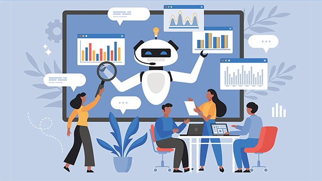

The Problem

Over the last 4 years, AI has drastically changes aspects of everybody's lives. Be it in entertainment, education, politics, or employment.
Everybody has at some point been influenced by this technology, and more often than not, in a negative way.
Due to this impacts, working people have been struggling, as well as those wishing to enter the workplace
What can be done about this? What Can Employers do to improve the quality of life for their employees and those wishing to enter the workforce?